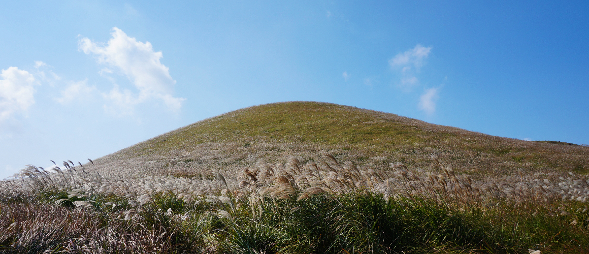

새별오름

새별오름은 가장 인기있는 오름으로 서부쪽의 대표 오름이다.
저녁 하늘에 샛별과 같이 외롭게 서있다 하여 붙여진 이름인데 가장 관광지가 많아 밀접해있는 서부쪽에 있어 관광객들이 제일 많다고 할 수 있다.
새별오름에는 외롭게 서있는 왕따나무가 있는데 그 앞이 포토존이기도 하다.
(제주특별자치도 제주시 애월읍 봉성리 산9-8)
한담해변

한담 해변은 카약을 탈 수 있는 곳으로 사계절 내내 카약을 타기 위해 인기 만점이고, 투명 카약을 탈 수 있어 푸른 바다 밑을 그대로 보면서 즐길 수 있다.
선셋이 유명하기로 유명한 한담 해변이기 때문에 카약이 아닌 선셋을 보면서 즐기기에도 좋다.
한담 해변은 바다 근처라 작은 카페들이 줄지어 있어 바다와 함께 커피를 해도 좋은 곳이다.
(제주특별자치도 제주시 애월읍 애월리)
9.18파크
9.18파크는 제주의 자연과 어우러져 액티비티를 즐길 수 있는 테마파크이다.
제주의 바람을 맞으면서 국내 최초 레이싱 테마파크로 루지와는 또 다른 느낌이 나기도 하고스피드 레이싱과 360도 회전하는 익스트림 그네, 다양한 익스트림 스포츠를 마련하고 있어 실내도 있지만 야외에서 넓은 제주 풍경을 보면서 스포츠를 즐길수 있어 인기 만점인 코스이다.
(제주특별자치도 제주시 애월읍 천덕로 880-24)